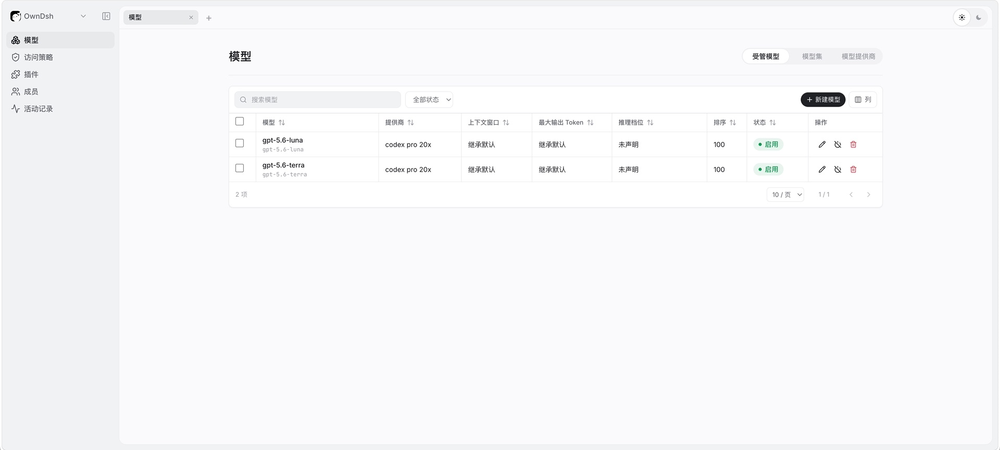
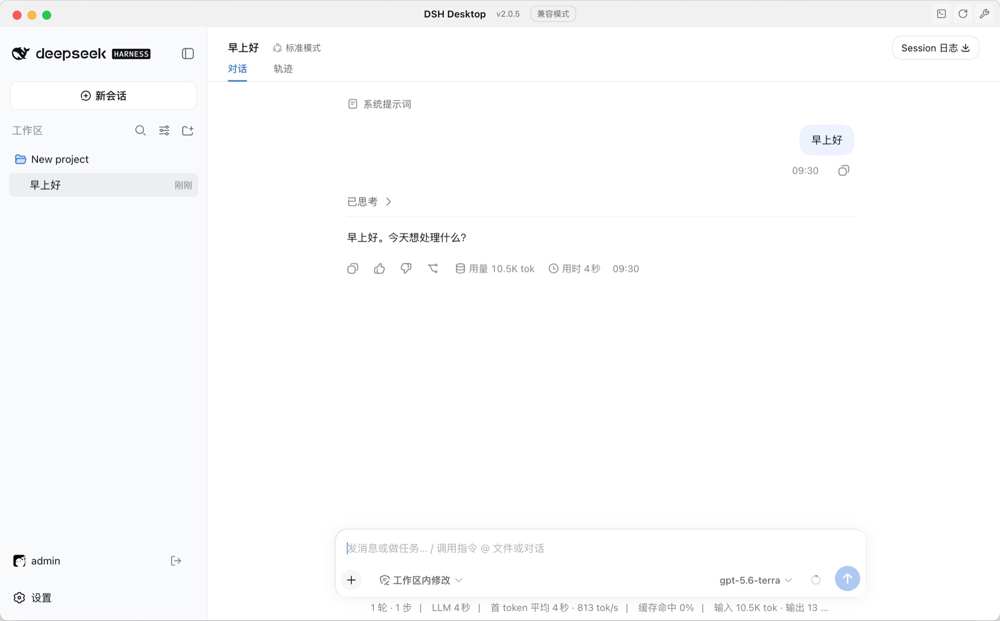

01
模型与密钥，集中管理
统一模型目录与供应商接入。API Key 留在服务端，成员直接使用获准模型。
01 / A SHARED CONTROL PLANE
管理员在一处管理团队资源，
成员在熟悉的 Desktop 或 Harness Web 中工作。
一个标准插件，连接两端。


02 / EVERYTHING IN ITS PLACE
统一模型目录与供应商接入。API Key 留在服务端，成员直接使用获准模型。
按组织、成员和模型分配 Token 配额，独立管理 RPM 与并发，让共享资源有序流动。
本地账号、LDAP 与 OIDC 按需接入。以成员、用户组和角色组织访问权限。
上传、签名、发布并分配 Harness 插件。从安装状态到版本回滚，始终有据可查。
模型调用、管理操作与用量记录集中查询，用 request ID 串起一次请求的完整线索。
通过官方扩展点接入 Harness。保留成员的工作区与工具执行方式，设备访问可随时撤销。
BUILT AROUND YOUR BOUNDARIES
OwnDsh 不 fork 官方 Web / Desktop UI，
不接管员工工作区，也不远程执行员工工具。
03 / MAKE IT YOURS
服务端用 Docker Compose 启动。
成员安装插件，连接团队的 Server。
现在就可以开始。
git clone https://github.com/boe1900/owndsh.git
cd owndsh
docker compose up -d --wait
启动后访问 localhost:8080。初始账号
admin / owndsh，首次登录强制改密。
公网部署前，请配置正式密钥、公开地址与 HTTPS。查看完整部署说明
corepack enable
corepack install --global pnpm@11.7.0
dsh plugin --profile web add --ignore-scripts owndsh-plugin@next
dsh --profile web
先安装官方 Harness，并确认 dsh、pnpm 在 PATH 中。安装后重启对应 profile，填写团队 Server
地址并登录。
corepack enable
corepack install --global pnpm@11.7.0
dsh plugin --profile desktop add --ignore-scripts owndsh-plugin@next
先安装官方 DSH Desktop 与可用的 dsh CLI。安装插件后重启 Desktop，填写团队 Server 地址并完成企业登录。
当前为预发布版本。Docker 镜像与 npm 插件均使用 next 通道。
OwnDsh 是独立的开源项目，不隶属于 DeepSeek AI 或 Anywhere Labs。它通过官方插件扩展点，为现有 Harness 增加团队治理能力。DeepSeek Harness 和 DSH Desktop 的名称、代码与商标归各自所有。
不需要。管理员在 OwnDsh 服务端配置供应商 API Key 并授权模型。成员使用企业账号登录，每次请求由网关校验身份、权限和额度，供应商密钥不会分发到员工设备。
可以。OwnDsh 支持 LOCAL、LDAP 和 OIDC 身份来源，以及 LDAP 用户导入和组映射。管理员在控制台的“成员”中配置身份源与团队访问范围。
当前处于预发布阶段，仅发布 next 通道。建议先在测试环境验证团队工作流；对外提供服务前，请完成正式密钥、HTTPS、备份和恢复配置，具体要求见仓库部署文档。